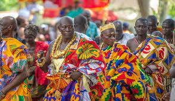

Language is a centripital force, as people unify together easier due to little miscommunication.
Language can be seen in a cultural landscape by the traditions they practice, and the way people treat and interact with their enviroment.
Culture
Aspects of Folk Culture:
Traditional Festivals, Storytelling, and Indigenous Arts
Aspects Of Pop Culture:
Moon dancing, Music
The migration after the fall of the Ghana Empire diffused parts of the Empire's culture throughout West Africa

Popular culture impacts folk culture by changing the culture. As the country becomes more modernized, the culture and traditions slowly lose their original value.
Parts of original culture, such as language, can become forgotten.
Religion
Religion and its Percentages:
Christian 71.3% Pentecostal/Charismatic 31.6%, Protestant
17.4%, Catholic 10%, other 12.3%, Muslim 19.9%,
traditionalist 3.2%, other 4.5%, none 1.1%
Most Prominent Religion:
Christianity
Origin of Religion:
Started based of the beliefs of Ancient Judaism and culture of the Roman Empire
Diffusion of Religion:
Expansion: Stimulus, as there are many forms of Christianity
Religion would be a centripital force, as people with the same religion can come together with their beliefs.
People can persuade others to believe their religion, bringing more people in.
Religion changes your lifestyle because with religion, typically you devote your life to a higher power, which can change the way you view your life, and how you see life in general, changing your lifestyle.
Politics
Type of Political Organization:
Presidential Republic
Former Colonial Control:
Under Britian Control until 1957
Date Country gained Statehood
6 March 1957 (from the UK)
Global Affiliations:
African Union, United Nations, World trade Organization, etc.
Current Political Leader:
Nana Akufo Addo
Nana Akufo Addo
The Ghana Goverment is stable, as it has a strong democracy and well kept peace in the country.
On October 6th, 2023, Ghana stated that the inflation dropped to 40.1 percent, from 43.1 percent in July and 42.5 percent in June 2023. The growing economic development in Ghana also gives government stability.
Sources:
“The World Factbook.” Cia.gov, https://www.cia.gov/the-world-factbook/. Accessed 17 Nov. 2023.
Potter, Simeon, and David Crystal. “English Language.” Encyclopedia Britannica, 14 Nov. 2023.
Denova, Rebecca. “Christianity.” World History Encyclopedia, 2022, https://www.worldhistory.org/christianity/.
“Membership in International Organizations.” U.S. Embassy in Ghana, 28 Mar. 2017, https://gh.usembassy.gov/our-relationship/policy-history/membership-international-organizations/.
“Folklore.” Ministry of Tourism, Arts & Culture (MoTAC) Ghana, https://www.motac.gov.gh/folklore/. Accessed 21 Nov. 2023.
“Ghana - Culture, Traditions, Cuisine.” Encyclopedia Britannica.
Stability of the Ghanaian Economy Has Been Achieved and Confidence Restored Minister for Finance | Ministry of Finance | Ghana. 9 Oct. 2023, mofep.gov.gh/news-and-events/2023-10-09/Stability-of-the-ghanaian-economy-has-been-achieved-and-confidence-restored-minister-for-finance.